Campina
Serviços próximos e a interface compartilhada.
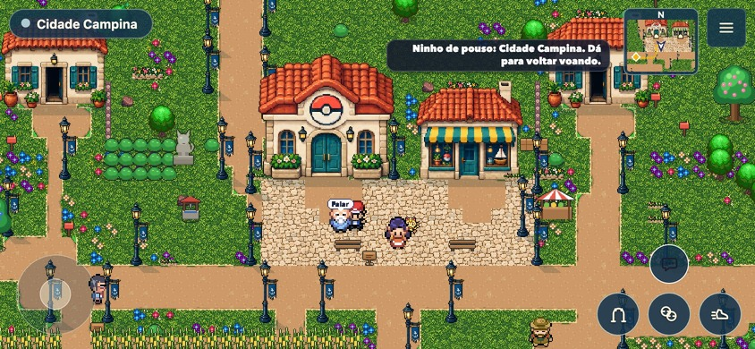
Sussurro
Arquitetura da mata preservada; mesma câmera e personagens originais.
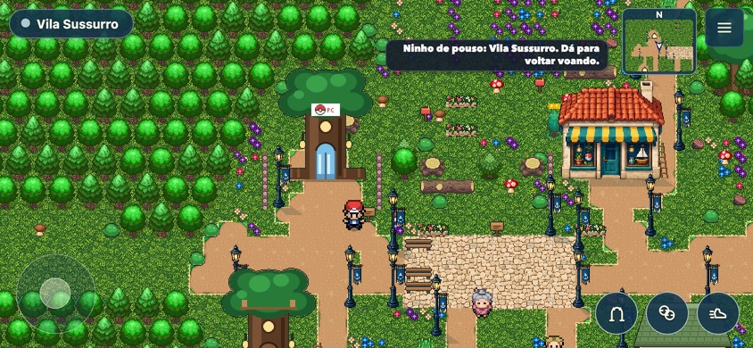
Geada
Neve e construções regionais continuam reconhecíveis.
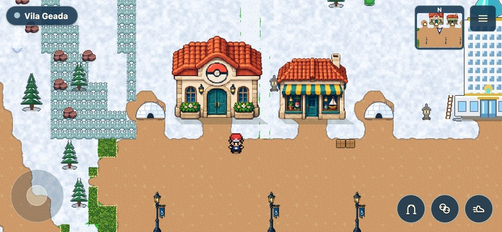
Mandacaru
Materiais do sertão preservados.
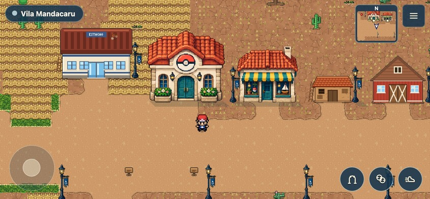
Gruta de Lúmen
Circuito em duas alas, lago e recompensa única.
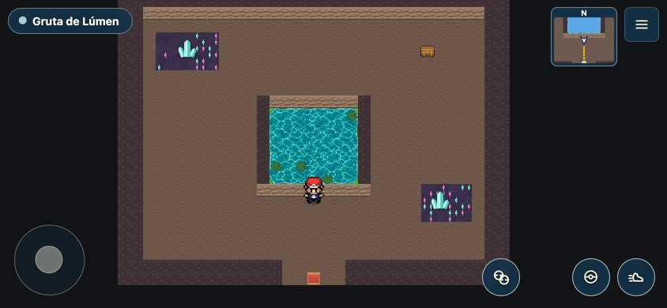
Clareira das Raízes
Duas pontes sobre o riacho e pomar na volta.
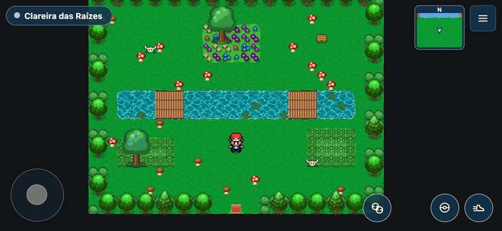
Ruína do Pomar
Alavanca abre a alcova; a saída permanece livre.
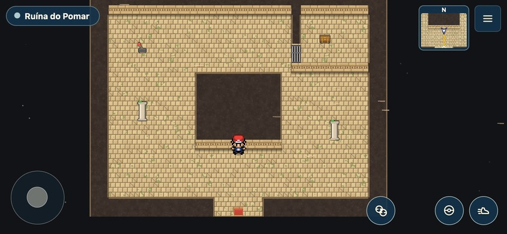
Casa
Mesmo enquadramento e controles nos interiores.
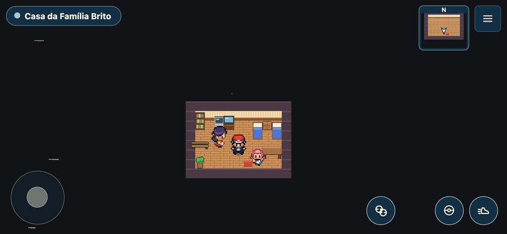
Centro Pokémon
Serviços e interações originais.
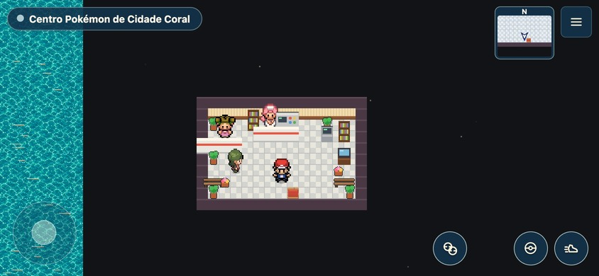
Ginásio do Farol
O puzzle e a campanha permanecem; apresentação compartilhada.
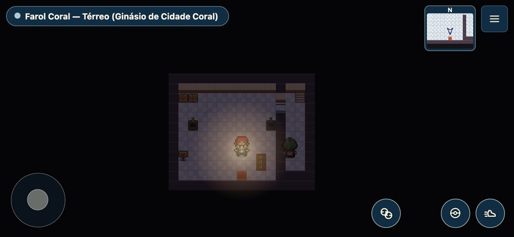
Terras do Ocaso
Troca de continente com o mesmo compositor.
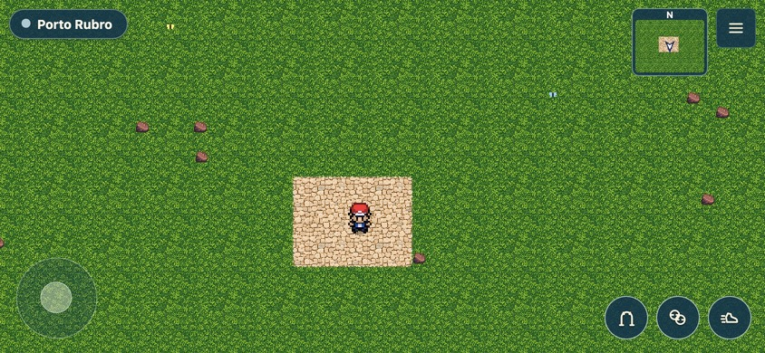